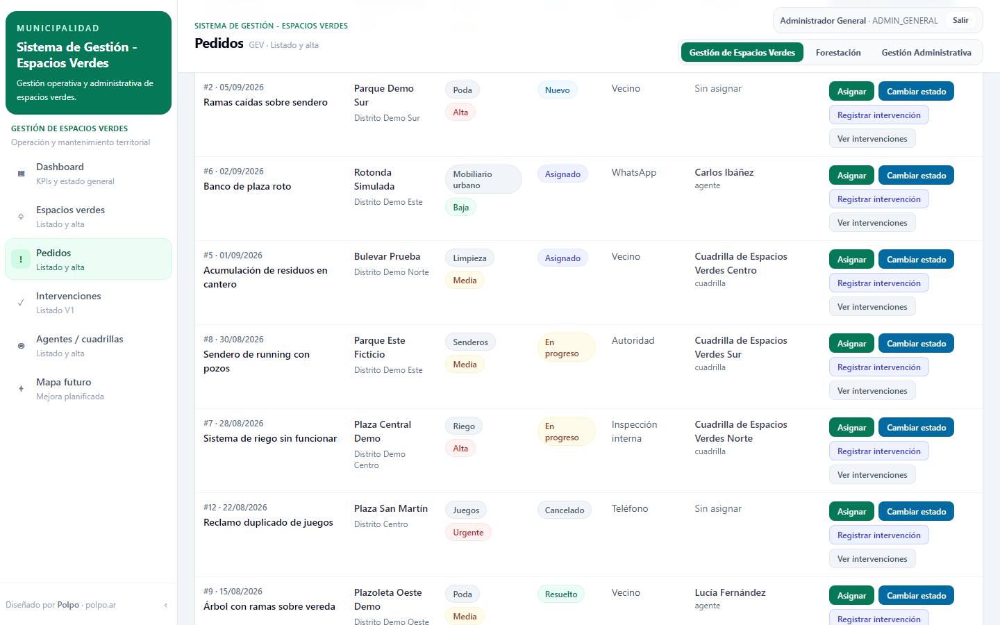
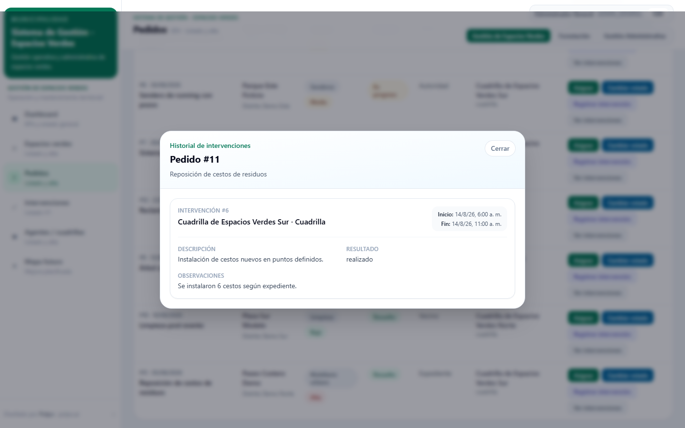
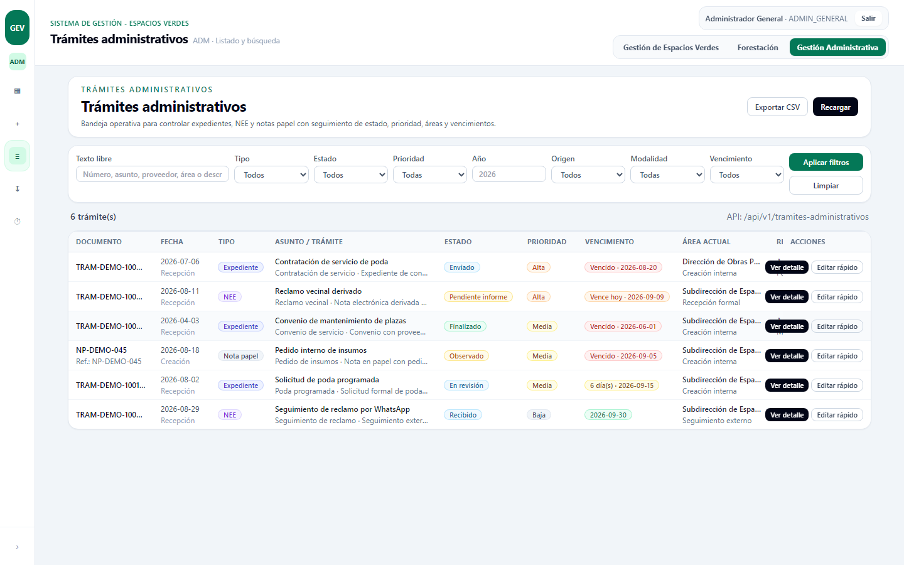

El proceso se descompone en entidades con responsabilidades distintas.
espacios_publicos funciona como referencia estable del territorio. Cada pedido_mantenimiento pertenece a un espacio y concentra tipo, prioridad, origen, ubicación y estado.
Las intervenciones_mantenimiento registran trabajo o novedades sobre un pedido. Las asignaciones mantienen qué agente o cuadrilla estuvo asociado a ese pedido en cada período.

Los pedidos usan un conjunto cerrado de estados.
El estado canónico del pedido se limita a nuevo, asignado, en_progreso, resuelto y cancelado. No se introdujo un estado adicional de cierre administrativo en V1.
La ejecución se registra por separado mediante intervenciones. Así, el estado general del pedido no reemplaza el detalle de lo que se hizo, cuándo y quién estuvo asignado.

El historial se deriva de relaciones explícitas, no de un único campo de estado.
created_at y updated_at. El historial exhaustivo de cambios de estado no forma parte del modelo V1.
Backend y frontend siguen la misma separación por módulos de dominio.
El backend usa un patrón explícito controller → service → repository. Zod valida payloads en el borde HTTP y TypeScript está configurado en modo strict tanto en backend como en frontend.
El acceso a PostgreSQL se hace con pg y consultas SQL directas. El frontend se organiza por feature y usa la History API del navegador en lugar de React Router.
Varias decisiones se cerraron antes de implementar el primer endpoint.
SQL directo con pg para mantener explícitas las consultas y simplificar debugging en un sistema de alcance acotado.
Autenticación por sesión y cookie, con control server-side de permisos para un sistema interno.
Tablas, columnas, catálogos y payloads usan el mismo idioma que el dominio operativo.
Identificadores internos simples para V1; UUID queda reservado para una necesidad futura de integración o exposición pública.
Product brief, MVP, decisiones, modelo de datos, contrato API y especificación de UI precedieron a la implementación ejecutable.
Las coordenadas son opcionales. El sistema puede operar con una referencia textual y un estado de precisión de ubicación.
El mismo sistema incluye seguimiento administrativo además del flujo de mantenimiento.
El alcance implementado incluye expedientes y trámites administrativos con pantallas de seguimiento. Estos módulos conviven con espacios, pedidos e intervenciones dentro del mismo frontend y backend modular.


Trabajo realizado y límites actuales.
01 Relevamiento de procesos operativos y administrativos.02 Product brief, alcance MVP y decisiones funcionales.03 Modelo relacional y schema PostgreSQL.04 Contrato REST y backend modular en TypeScript.05 Frontend React organizado por features.06 Autenticación, roles y permisos por módulo.El repositorio de operación es privado. Las capturas publicadas en este portfolio usan exclusivamente datos ficticios y excluyen información operativa real.
Volver a los proyectos